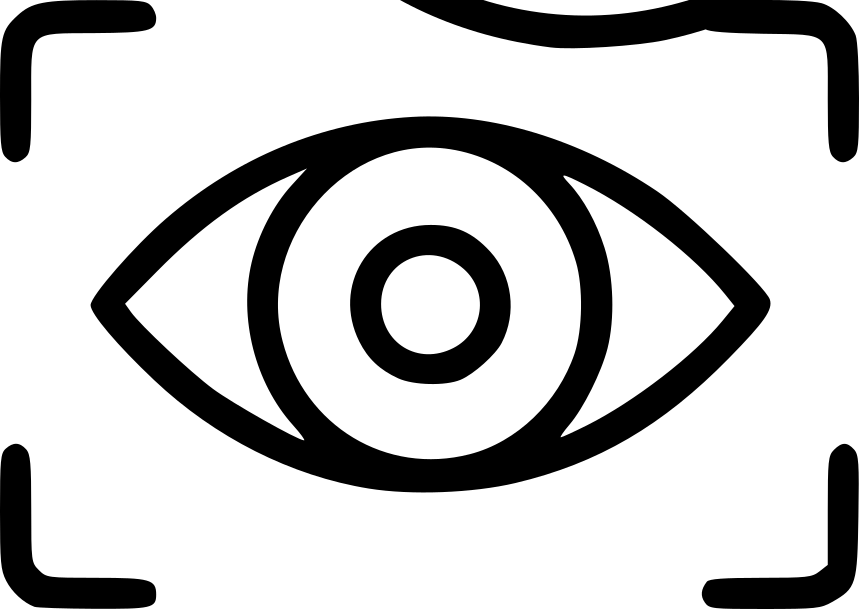
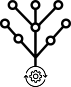
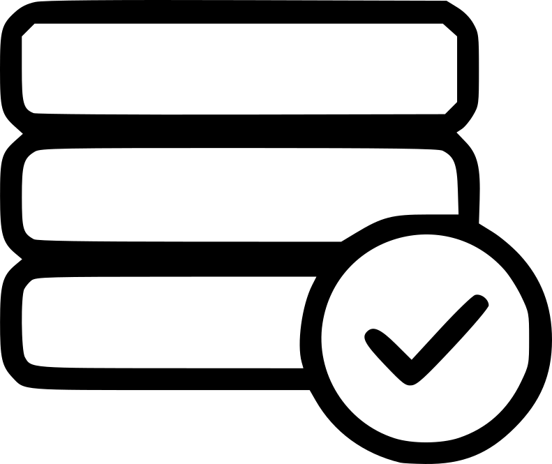

Il Nostro Team
METTI QUALCOSA QUA DAI SU
Rendiamo ogni museo un patrimonio accessibile al mondo
Semplifichiamo la digitalizzazione delle collezioni museali con strumenti personalizzabili su misura. La nostra piattaforma AI-assistita trasforma il processo di catalogazione, rendendo accessibili anche i tesori nascosti nei depositi.
Una soluzione completa pensata per le esigenze specifiche dei musei di storia naturale e non solo
Digitalizza intere collezioni in una frazione del tempo tradizionale. Il nostro sistema AI-assistito accelera drasticamente il processo di catalogazione.
Riconoscimento automatico di oggetti e specie, lettura OCR delle etichette, standardizzazione dei metadati. L'AI lavora per te, tu mantieni il controllo.
Personalizzazione completa per ogni tipo di collezione. Dal museo di storia naturale all'arte, ci adattiamo alle vostre esigenze specifiche.
Due percorsi di digitalizzazione intelligente per ogni esigenza del museo
Carica le foto dei tuoi reperti: scatole con più oggetti o singoli campioni con cartellini
Digitalizzazione rapida di collezioni multiple

Riconoscimento VisivoIdentificazione automatica dei singoli individui nella foto, separazione dal background

Classificazione automaticaAssegnazione di classi tassonomiche agli oggetti riconosciuti

Dati standardizzatiCodici individuo, dati di specie e tipo nomenclaturale
Estrazione completa dei metadati scientifici
Riconoscimento e isolamento dei cartellini dalla foto
OCR + LLM per estrazione e interpretazione del testo
Dati validati in formato Darwin Core standard per musei
Scegli come implementare NEST nel tuo museo: autonomia o supporto completo
NEST è progettato per adattarsi a qualsiasi tipo di museo. Abbiamo iniziato con i musei di storia naturale come early adopter, ma la nostra piattaforma è completamente personalizzabile per collezioni d'arte, archeologia, etnografia, e qualsiasi altra tipologia di patrimonio culturale.
No, il nostro software è progettato per essere intuitivo e user-friendly. Offriamo una formazione iniziale breve e manuali di supporto dettagliati. Il personale museale può iniziare a digitalizzare dopo poche ore di training.
L'AI agisce come assistente: riconosce automaticamente oggetti e specie, legge le etichette tramite OCR, e suggerisce la standardizzazione dei dati. Tuttavia, tutte le decisioni finali rimangono sotto il controllo dell'operatore umano, garantendo accuratezza scientifica e qualità dei contenuti.
NEST supporta tutti i principali standard riconosciuti a livello museale e scientifico internazionale (es. Darwin Core). La piattaforma può essere configurata per conformarsi agli standard specifici del vostro museo o alle linee guida nazionali.
Attualmente abbiamo un prototipo funzionante e stiamo preparando il lancio della beta. Iscrivendoti alla newsletter riceverai aggiornamenti tempestivi sul lancio e avrai accesso prioritario alla piattaforma.
Certamente! Una volta iscritto alla newsletter per l'accesso beta, potrai richiedere una demo personalizzata. Ti mostreremo come NEST può adattarsi specificamente alle esigenze del tuo museo.
METTI QUALCOSA QUA DAI SU